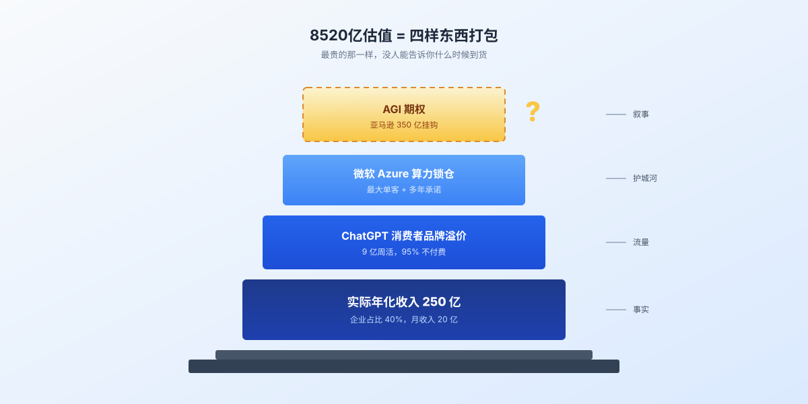
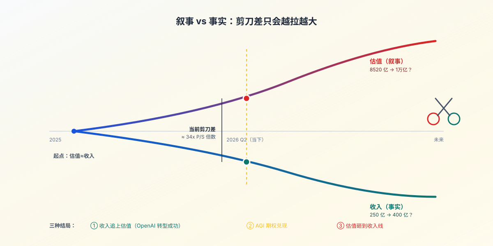

一、收入第一已经换了，估值第一假装没看见
先把数字摆上桌。
Anthropic这边：年化收入300亿，2025年初这个数字还是10亿，15个月翻了30倍。1000家以上企业每年付Claude超过100万美金，财富10强里有8家在用，八成收入来自企业。
OpenAI那边：年化收入250亿（月收入20亿乘12），9亿周活用户，95%不付费，企业收入占比从去年的20%涨到现在的40%。
放进同一张表，AI行业最大的两家公司，第一次出现了"收入老大不是OpenAI"的局面。
但你打开App Store、打开微博、打开任何一个普通人聊AI的群——OpenAI还是那个OpenAI，Sam Altman还是那个发布会王。Anthropic？大部分散户连Dario Amodei是谁都答不上来。
（懂的都懂，普通人对一家公司的认知，靠的是它出没的频率，不是它账上的数字。）
更刺激的是估值。
OpenAI：8520亿美金，刚拿了1220亿融资。
Anthropic：380亿（2026年2月Series G），现在投资人主动报到800亿要锁IPO份额。
换算一下"每1块收入对应多少估值"——
OpenAI：1块钱收入对应34块钱估值。
Anthropic（按800亿算）：1块钱收入对应26块钱估值。
按380亿算更夸张，1块钱收入只对应13块钱估值。
也就是说，今天市场愿意为OpenAI每1块钱收入多付的8块钱，买的不是它的钱，是它的"故事"。
那这个故事到底值不值这8块？
二、8520亿买的不是OpenAI，是OpenAI身后的"全民AI叙事"
打个比方。
你在街角开了家奶茶店。每天来1000个人，950个进来上厕所就走，50个真买。月流水20万。
隔壁老板娘也开了家奶茶店。每天来100个人，但80个是隔壁公司的财务，月卡按企业开，月流水30万。
投资人来了，看了两家。给老板娘估了380亿，给你估了852亿。
理由是：你那950个白嫖的人，万一哪天开始付钱呢？万一你扩张到机场、写字楼、地铁站呢？万一你"哪天"做出AGI——不好意思，做出全自动奶茶机呢？
这就是OpenAI被估值的逻辑。
8520亿这个数字里，至少要拆三块：
一块给ChatGPT本身——9亿周活的"消费者品牌"，类比是Google、Meta那种基础设施，市场愿意为"未来转化"付溢价。
一块给微软——OpenAI是微软Azure的最大单客之一，微软的算力承诺直接构成它的供给护城河。
还有一块，给"AGI看涨期权"。
这块最贵，也最玄。
证据：亚马逊这次给OpenAI的500亿投资里，有350亿是contingent payment——条件是"OpenAI上市，或者实现AGI"。
也就是说，全球第一大云厂商，第一次把一个还没人定义清楚的东西，写进了正式合同的付款条款。
（这事我反复看了三遍。AGI怎么验收？谁来评？合同里没写。但章就这么盖了。）
亚马逊的350亿，本质是个看涨期权——赌AGI在某个时间窗口里发生，OpenAI是大概率受益方。它不亏，因为不发生就不付。OpenAI赚了估值数字，因为先把这350亿计入了8520亿的总盘子。
8520亿的估值，就是这么打包出来的：250亿收入打底 + 消费者品牌溢价 + 微软锁仓 + AGI期权。
四样东西捆在一起卖，其中最贵的那一样，没人能告诉你什么时候到货。

三、Anthropic的反超不是巧合，是"训练效率"碾压
Anthropic做对了两件事，一件是技术，一件是路线。
技术那件：训练成本只有OpenAI的四分之一。
这不是Anthropic自己说的，是行业里反复被引用的数字——Claude Sonnet 4.6、Opus 4.6这一代模型，单位训练算力的成本只有同期GPT-5系列的25%-30%。
意味着什么？同样1美金算力，Anthropic能做出4倍的模型迭代次数。
路线那件：从一开始就盯着企业。
OpenAI的逻辑是先做爆款消费者产品，再向企业渗透。ChatGPT 9亿周活、95%白嫖、企业收入占比从20%往40%爬。
Anthropic的逻辑是反过来——一开始就只接企业。Claude API、Claude Code、Claude for Work。八成收入来自企业，1000家以上企业每年付超过100万美金。最近一个季度，Claude Code单产品的年化收入就到了25亿美金，周活半年翻倍。
这两条路线没有谁绝对对错，但有一条经济学上的硬规律：企业付费的"客户终身价值"，平均是消费者付费的5到10倍。
也就是说，Anthropic每签下一个企业大客户，相当于OpenAI签下5到10个个人付费用户。
OpenAI不是不知道。所以4月9日，OpenAI推出了ChatGPT Pro月费100美金的版本——这个价格点，正好是Claude Pro的对标价。CFO Sarah Friar两年前接手时企业收入占20%，现在已经40%，年底目标50%。
OpenAI在转型企业。但问题是——
Anthropic已经把企业市场最高质量的那一段（财富10强里8家）拿走了。
剩下的次高质量段还在抢，Microsoft Copilot在抢，Google Workspace AI在抢，OpenAI自己的GPT Enterprise也在抢。
这就是路线的代价：先做消费者再转企业，相当于先开大学城连锁、再去抢机场专柜——同一个老板，门面要重做、客户经理要重招、合同要重签。Anthropic则是从一开始就开在了机场。
四、AGI期权没兑现之前，估值和收入的剪刀差只会越拉越大
说回那张奶茶店的图。
如果OpenAI接下来12个月，企业收入真能从40%冲到60%、年化收入追到400亿——那8520亿的估值勉强能撑住。
如果AGI在某个具体场景里兑现了，亚马逊那350亿付出来——估值还能再撑一段。
如果两件事都没发生——市场会自己修正。
但市场修正向来不温柔。它要么砸盘，要么停牌，要么换叙事。
参考一个旁证：PwC今年4月发布的《2026 AI Performance Study》，调查了1217名高管，结论是——
全球AI红利的74%，被20%的公司拿走了。
头部20%企业从AI里拿到的收入和效率提升，是行业平均的7.2倍。
赢家通吃这事，在企业层面已经发生。Anthropic拿走的那800多家月付百万美金的财富500强客户，OpenAI再想抢回来，时间窗口已经关上一半了。
再加一个旁证：从2026年3月底开始，中国大模型周调用量已经连续5周超过美国，全球前6大模型按调用量排名，全部来自中国（DeepSeek、Qwen、智谱、Kimi等）。
也就是说：
内部，OpenAI被Anthropic在收入上反超。
外部，整个美国AI在调用量上被中国追上。
OpenAI的8520亿估值，是建立在"美国领跑全球 + OpenAI领跑美国"这两个假设之上的。
而这两个假设，在2026年4月这一周，同时被现实打了折扣。
不是说OpenAI不会涨。它可能涨到1万亿，可能上市，可能在某个时间点真的兑现部分AGI叙事。
但今天这个估值，本质上是"叙事的产物"。
而Anthropic的300亿收入，是"事实的产物"。
叙事和事实之间，市场永远不会两边都给你定全价。

结尾
同行赚钱，我赚估值。
这听起来像段子。但在2026年4月这一周，它就是OpenAI的真实写照。
8520亿美金，全球第一估值。
250亿美金，全球第二收入。
350亿美金的亚马逊期权，赌一个没人说得清的AGI。
如果有一天你看到一家公司——它估值是同行的2倍，收入是同行的0.83倍，9成用户不付费，最大客户的合同里写着"等你做成AGI再付款"——你大概率会觉得这事不太对劲。
但当这家公司叫OpenAI的时候，所有人都会说——这次不一样。
每次说"这次不一样"的时候——
通常都一样。